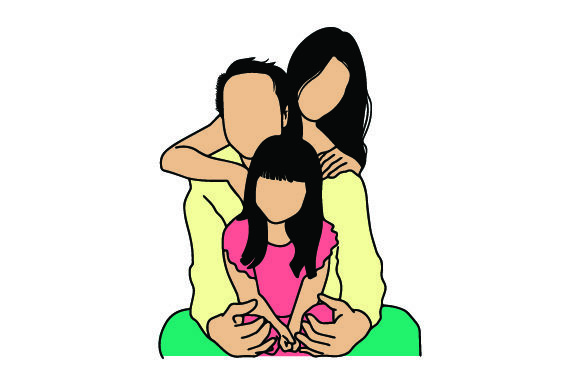

Amazing People
Family
Backbone of the life
The connection with our family deeply influences how we feel and act, both physically and emotionally. It's really important to have a good relationship with them because it shows how much we're loved and how we've been brought up well. Our family is like a safe place where we're accepted, understood, and supported no matter what, and being part of it gives us comfort, strength, and a sense of belonging through life's ups and downs.
Importance
- Love and Support: When a family is happy together, they offer love and support to each other unconditionally. This creates a warm and nurturing environment where everyone feels valued and cared for.
- Strong Bonds: Happiness strengthens the bonds between family members. Spending quality time together, sharing laughter, and creating memories build a strong foundation of trust and understanding.
- Emotional Stability: A happy family provides emotional stability for its members. Knowing that there is a supportive network to fall back on during tough times can alleviate stress and anxiety.
- Healthy Communication: Happiness fosters open and honest communication within the family. Members feel comfortable expressing their thoughts and feelings, leading to fewer misunderstandings and conflicts.
- Sense of Belonging: Being part of a happy family gives everyone a sense of belonging and acceptance. This feeling of being loved and wanted boosts self-esteem and confidence.
- Shared Joy: Celebrating each other's achievements and milestones amplifies the joy within the family. Whether it's a graduation, promotion, or simply a small victory, sharing these moments strengthens the familial bond.
- Resilience: A happy family is better equipped to face life's challenges together. With a positive outlook and a supportive environment, they can overcome obstacles and emerge stronger as a unit.